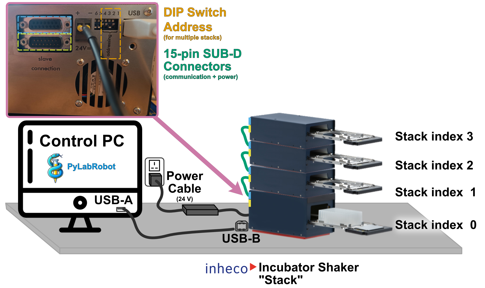

Inheco Incubator (Shaker)#
Summary |
Image |
|---|---|
|
 Figure: Inheco Incubator Shaker MP & DWP models |
About the Machine(s)#
Inheco incubator shakers are modular machines used for plate storage, temperature control and shaking. They differentiate themselves:
heater shakers … heat a material on which a plate is being placed; open-access; non-uniform temperature distribution around the plate; enables shaking of plate.
incubator shakers … an enclosed chamber that is being heated and houses a plate; plate access is controlled via a loading tray and a door; highly uniform temperature distribution around the plate; enables shaking of plate.
The Inheco incubator devices come in 4 versions, dependent on (1) whether they provide a shaking feature & (2) the size of plates they accept:
RTS Code |
Shaking Feature |
Plate Format |
Device Identifier |
Typical Model |
|---|---|---|---|---|
|
❌ No |
MP (Microplate) |
|
INHECO Incubator MP |
|
✅ Yes |
MP (Microplate) |
|
INHECO Incubator Shaker MP |
|
❌ No |
DWP (Deepwell Plate) |
|
INHECO Incubator DWP |
|
✅ Yes |
DWP (Deepwell Plate) |
|
INHECO Incubator Shaker DWP |
Note
Note: All 4 machines can be controlled with the same PyLabRobot Backend, called InhecoIncubatorShakerBackend!
Setup Instructions (Physical)#

To facilitate integration, multiple devices can be placed on top of each other to form an Incubator Shaker Stack (see infographic above), but care has to be taken to not overstrain the connections:
Each of the 4 different shaker types requires a different amount of power. An easier way to identify the configurations possible is to think of “incubator power credits” - no stack must exceed 5 power credits (see User and Installation Manual):
An “incubator MP” -> 1 “incubator power credits” -> 5 units can be stacked on top of each other.
An “incubator DWP” -> 1.25 “incubator power credits” -> 4 units.
An “incubator shaker MP” -> 1.6 “incubator power credits” -> 3 units
An “incubator shaker DWP” -> 2.5 “incubator power credits” -> 2 units
However, the machines in a single stack can be of any of the 4 types. This means you could create stacks of:
2x “incubator DWP” (1.25 credits) + 1x “incubator shaker DWP” (2.5 credits)
3x “incubator MP” (1 credits) + 1x “incubator shaker MP” (1.6 credits) [shown in the infographic above]
When a stack would exceed more than 5 “incubator power credits”, you must build multiple stacks (ask your Inheco sales representative if you are unsure before trying this out).
The benefit of this setup is that only one power cable and only one USB cable have to be plugged into the machine at the very bottom of a machine (i.e. stack index 0). Machines above the bottom one only need to be connected with the machine below it using the 15-pin SUB-D connectors that come with each machine when bought from Inheco.
Note
Note: In PyLabRobot, the stack is the central control element and is controlled via its own instance of the InhecoIncubatorShakerStackBackend.
Explanation |
Image |
|---|---|
To connect an InhecoIncubatorShakerStackBackend you must set the DIP switch identifier on the back of the bottom machine:
Setting the DIP switch to generate a machine addressEach machine has a 4-pin DIP switch. Each pin can beUP (0) or DOWN (1). Note: the two pins to the left of the DIP switch are not part of the addressing and should remain in the DOWN position. This forms a 4-bit binary address:
|
 Figure: DIP switch layout to generate different identifiers/addresses |
Setup Instructions (Programmatic)#
After the two cables have been connected to the bottom-most Inheco Incubator Shaker, you have to…
instantiate the
InhecoIncubatorShakerStackBackendand give it the correctdip_switch_id&stack_index, andcreate a
IncubatorShakerStackfrontend and give it the new backend instance.
The “stack” is the central interface to all units in it. The stack automatically identifies all units inside it (including their type), and will create both the correct connection and a physical instance for it.
Note
Before a connection has been established the incubator shaker’s front LED blinks. After the connection has successfully been made, the LED will continuously be on.
from pylabrobot.storage.inheco import IncubatorShakerStack, InhecoIncubatorShakerStackBackend
import asyncio # only needed for examples in this tutorial, optional for your purposes
import time # only needed for examples in this tutorial, optional for your purposes
iis_stack_backend = InhecoIncubatorShakerStackBackend(dip_switch_id = 2)
iis_stack = IncubatorShakerStack(backend=iis_stack_backend)
await iis_stack.setup()
Note
If you are interested in seeing information about the machine you are connecting to, you can set the .setup() optional argument verbose to True:
serial port used for connection
DIP switch ID used and verified
number of units identified in the stack
composition (index and type of units) of the stack
Usage: Controlling Individual Units#
Addressing Units & Sensing Plate Presence#
The stack interface enables fast, direct access to any machine in a stack.
Every Inheco incubator (shaker) contains an internal, reflection-based plate sensor. (This is very useful e.g. when someone has forgotten their plate in the incubator 👀)
Let’s use this as an example of how you can address different units in the stack individually:
iis_stack.num_units
2
for idx in range(iis_stack.num_units):
plate_presence_check = await iis_stack[idx].request_plate_in_incubator()
print(idx, plate_presence_check)
0 False
1 False
Option 2: Addressing individual units by calling the stack backend with the correct stack_index
for idx in range(iis_stack.num_units):
plate_presence_check = await iis_stack.backend.request_plate_in_incubator(
stack_index=idx
)
print(idx, plate_presence_check)
0 False
1 False
Option 3: Storing each unit as a handy variable
incubator_shaker_0 = iis_stack[0]
plate_presence_check_0 = await incubator_shaker_0.request_plate_in_incubator()
incubator_shaker_1 = iis_stack[1]
plate_presence_check_1 = await incubator_shaker_1.request_plate_in_incubator()
print(plate_presence_check_0, plate_presence_check_1)
False False
We usually use the direct indexing of the frontend method but it is up to you to choose. e.g.: storing of units in separate variables can be very useful when using many stacks.
Using Loading Tray#
for idx in range(iis_stack.num_units):
await iis_stack[idx].open()
await asyncio.sleep(2)
await iis_stack[idx].close()
Warning
On parallelization of commands to machines in the same incubator shaker stack
Each machine in the same stack communicates via the same USB(-A to -B) cable. As a result, if you send multiple commands at the same time, they will be queued and executed one after another.
This means you cannot open all incubator shakers in the same stack at the same time.
However, if you arrange your Inheco Incubators into different stacks this should still be possible.
Temperature Control#
Show current temperature in °C
for idx in range(iis_stack.num_units):
current_temp = await iis_stack[idx].get_temperature()
print(current_temp)
20.1
23.6
Time how long the machine takes to reach target temperature using standard Python - no need to re-invent the wheel
target_temperature = 37
await iis_stack[0].start_temperature_control(target_temperature)
start_time = time.time()
Quick check of how the temperature increases for 5 sec
for x in range(5):
current_temp = await iis_stack[0].get_temperature(sensor="main")
print(current_temp)
time.sleep(1)
20.3
20.7
21.6
22.6
23.5
Explanation |
Image |
|---|---|
The Inheco Incubator (Shaker) contains three independent temperature sensors:
By default,
|
 Figure: Inheco Incubator Shaker Temperature Sensor Positioning |
Wait until target temperature has been reached:
temp_reached = await iis_stack[0].wait_for_temperature(
sensor = "mean",
tolerance = 0.1, # ℃ - default: 0.2
interval_s = 0.2, # sec - default: 0.5
show_progress_bar = True # default: False
)
elapsed_time = time.time() - start_time
print(f"\ntime taken to reach target temperature {target_temperature}°C: {round(elapsed_time, 1)} sec")
Simple stopping of temperature control without stopping (i.e. breaking the connection) the machine itself:
await iis_stack[0].stop_temperature_control()
await iis_stack[0].is_temperature_control_enabled()
False
Shaking Control#
Only Incubator “Shakers” can use shaking commands.
During .setup() the machine will check whether it is an incubator_shaker (“MP” or “DWP”) and the Python backend only allows shaking commands being sent to the machine if it is an incubator_shaker, i.e. the following commands will not work if you have pure incubators.
await iis_stack[0].shake(rpm=800)
await asyncio.sleep(5)
await iis_stack[0].stop_shaking()
Inheco incubator shakers support precise, programmable motion in both the X and Y axes. The resulting shaking pattern is defined by five parameters:
Amplitude in X (
Aₓ, 0–3 mm)Amplitude in Y (
Aᵧ, 0–3 mm)Frequency in X (
fₓ, 6.6–30.0 Hz)Frequency in Y (
fᵧ, 6.6–30.0 Hz)Phase shift (
φ, the angular offset between X and Y motion, in degrees)
Different combinations of these parameters produce circular, linear, elliptical, or figure-eight movement paths.
Predefined Shaking Patterns in PyLabRobot#
To simplify configuration, PyLabRobot provides predefined motion presets that map common use cases to specific parameter combinations:
Pattern |
Description |
Parameter relationship |
Required speed attribute |
|---|---|---|---|
|
Circular shaking |
|
|
|
Elliptical motion |
|
|
|
Figure-eight (Lissajous) motion |
|
|
|
Linear motion along X |
|
|
|
Linear motion along Y |
|
|
Note
The default behaviour of .shake() uses…
an orbital shaking pattern,
x amplitude = 3 mm,
y amplitude = 3 mm.
(see “Simplest usage” example above)
Orbital shaking example with modified amplitudes
await iis_stack[0].shake(
pattern="orbital",
rpm=800,
amplitude_x_mm=2.0,
amplitude_y_mm=2.0
)
await asyncio.sleep(5)
await iis_stack[0].stop_shaking()
Elliptical shaking example with modified amplitudes:
await iis_stack[0].shake(
pattern="elliptical",
rpm=800,
amplitude_x_mm=2.5,
amplitude_y_mm=2.5
)
await asyncio.sleep(5)
await iis_stack[0].stop_shaking()
Figure-eight shaking example:
await iis_stack[0].shake(
pattern="figure_eight",
rpm=400,
)
await asyncio.sleep(5)
await iis_stack[0].stop_shaking()
If you feel adventurous, see the math that goes into the calculation of different shaking patterns here:
📘 How PyLabRobot Implements Inheco Shaking Patterns (Mathematical Overview)
Inheco incubator shakers move a plate by oscillating the platform in two directions — X and Y — at programmable amplitudes, frequencies, and phase offsets.
The Core Equations
The motion of the platform is described by two sinusoidal functions:
[ \begin{aligned} x(t) &= Aₓ \sin(2\pi fₓ t) \ y(t) &= Aᵧ \sin(2\pi fᵧ t + φ) \end{aligned} ]
Where:
Symbol |
Meaning |
Example |
|---|---|---|
|
Amplitudes (mm) — how far the plate moves in X and Y |
2.5 mm |
|
Frequencies (Hz) — how fast each axis oscillates |
10 Hz, 20 Hz |
|
Phase shift (°) — timing offset between X and Y |
0°, 90°, 180° |
Each axis moves smoothly back and forth like a spring.
When these two motions combine, they trace elegant paths such as circles, ellipses, or figure-eights.
Pattern Intuition
Different shaking patterns are created by adjusting the relationships between these parameters:
Pattern |
Conditions |
Description |
|---|---|---|
Linear X |
|
Motion only along X (back-and-forth line) |
Linear Y |
|
Motion only along Y |
Orbital |
|
Perfect circular motion |
Elliptical |
|
Elongated circle (ellipse) |
Figure-Eight (Lissajous) |
|
Double-loop path shaped like ∞ |
Example: Figure-Eight Motion
In firmware terms:
SSP20,20,100,200,90 ASE1
corresponds to:
Aₓ = Aᵧ = 2.0 mmfₓ = 10.0 Hzfᵧ = 20.0 Hzφ = 90°
This combination makes the platform’s Y motion twice as fast as its X motion —
the resulting path is a Lissajous figure, visually resembling a “figure-8”.
Why This Matters
By controlling these parameters precisely:
The mixing efficiency can be tuned to the liquid’s viscosity.
The path geometry affects shear stress and aeration.
Repeatable motion profiles ensure reproducibility across runs.
Understanding this relationship helps you select the right pattern
(orbital, elliptical, figure_eight, etc.) for your experiment.
Empowerment Showcase#
With control of multiple single incubator shakers a whole array of complex experimental & optimisation processes is possible.
This PyLabRobot integration aims to make these machine powers as accessible as possible.
One still relatively simple example: Parallelize shaking of different incubators with different shaking + temperature conditions … did someone say “Design of Experiments” 👀📊
await iis_stack[0].start_temperature_control(29)
await iis_stack[1].start_temperature_control(37)
await iis_stack[0].wait_for_temperature(sensor="mean", show_progress_bar=True)
await iis_stack[1].wait_for_temperature(sensor="mean", show_progress_bar=True)
await iis_stack[0].shake(
pattern="orbital",
rpm=500,
)
await iis_stack[1].shake(
pattern="figure_eight",
rpm=800,
)
await asyncio.sleep(10)
await iis_stack[0].stop_temperature_control()
await iis_stack[1].stop_temperature_control()
await iis_stack[0].stop_shaking()
await iis_stack[1].stop_shaking()
Waiting for target temperature 29.00 °C...
[████████████████████████████████████----] 29.20 °C (Δ=0.20 °C | ETA: 3.0s)
[OK] Target temperature reached.
Waiting for target temperature 37.00 °C...
[█████████████---------------------------] 36.87 °C (Δ=0.13 °C | ETA: 4.3s)
[OK] Target temperature reached.
Self Test / Maintenance (PLR beta)#
The Inheco firmware provides a “self-test” which checks the drawer, temperature and shaking features. This test can take up to 5 min.
The test must be performed without a plate in the incubator.
It generates a binary code in which each position represents a machine subsystem:
Bit 0: Drawer
Bit 1: Homogeneity Sensor 3 versus Sensor 1 (>2 K)
Bit 2: Homogeneity Sensor 2 versus Sensor 1 (>2 K)
Bit 3: Sensor 1 doesn’t reach Target Temperature after 130 sec.
Bit 4: Y-Amplitude Shaker
Bit 5: X-Amplitude Shaker
Bit 6: Phase Shift Shaker
Bit 7: Y-Frequency Shaker
Bit 8: X-Frequency Shaker
Bit 9: Line Boost-Heater broken
Bit 10: Line Main-Heater broken
A 0 means no error has been found for that subsystem, and a 1 means there is a hardware fault.
await iis_stack[0].perform_self_test()
{
"drawer_error": False,
"homogeneity_sensor_3_vs_1_error": False,
"homogeneity_sensor_2_vs_1_error": False,
"sensor_1_target_temp_error": False,
"y_amplitude_shaker_error": False,
"x_amplitude_shaker_error": False,
"phase_shift_shaker_error": False,
"y_frequency_shaker_error": False,
"x_frequency_shaker_error": False,
"line_boost_heater_broken": False,
"line_main_heater_broken": False,
}
This is a beta feature in PyLabRobot and we will verify the interpretation with the PyLabRobot supporting OEM, Inheco - all our machines appear to be fully functional, i.e. we couldn’t check whether a faulty machine will correctly be flagged by this self-test.
Usage: Master Control via the Stack Frontend 🦾#
Even though loops make setting temperatures fast and efficient, we found it is too much code.
This is why we enabled the frontend to have “master control commands” for all units in a stack.
Querying Statuses#
await iis_stack.request_loading_tray_states()
{0: 'closed', 1: 'closed'}
await iis_stack.request_temperature_control_states()
{0: False, 1: False}
await iis_stack.request_shaking_states()
{0: False, 1: False}
Master Commands - Loading Trays#
await iis_stack.open_all()
await iis_stack.request_loading_tray_states()
{0: 'open', 1: 'open'}
await iis_stack.close_all()
await iis_stack.request_loading_tray_states()
{0: 'closed', 1: 'closed'}
Master Commands - Temperature Control#
await iis_stack.start_all_temperature_control(target_temperature=37)
await asyncio.sleep(10)
await iis_stack.get_all_temperatures()
{0: 37.8, 1: 34.4}
await iis_stack.stop_all_temperature_control()
Master Commands - Shaking Control#
await iis_stack.request_shaking_states()
{0: False, 1: False}
Closing Connection#
Standard PyLabRobot way of closing the communication to the machine, i.e. the stack:
await iis_stack.stop()
This stops all temperature control, and all shaking before disconnecting from the stack.
Note
If you develop a small script that you find yourself re-using and that goes beyond the simple “hello world, inheco incubator shaker”-style examples here, please consider contributing it back to the PyLabRobot community as a Cookbook Recipe.
Usage: Multiple Stacks#
To connect more than one machine stack:
instantiate a separate backend and frontend for each,
you must hand the serial port to each stack’s backend explicitly
Note
When using one stack, PyLabRobot finds the machine’s port automatically based on its unique VID:PID, if multiple machines are found with the same VID:PID there is ambiguity
e.g. the VSpin & Cytation 5 use the same identifier combo :’)
perform a setup for each stack.
(set on the back of the bottom-most machine):
iis_stack_backend_0 = InhecoIncubatorShakerStackBackend(dip_switch_id = 2, port="/dev/cu.usbserial-130")
iis_stack_0 = IncubatorShakerStack(backend=iis_stack_backend_0)
await iis_stack.setup(verbose=True)
iis_stack_backend_1 = InhecoIncubatorShakerStackBackend(dip_switch_id = 7, port="/dev/cu.usbserial-42")
iis_stack_1 = IncubatorShakerStack(backend=iis_stack_backend_1)
await iis_stack_1.setup(verbose=True)
iis_stack_backend_2 = InhecoIncubatorShakerStackBackend(dip_switch_id = 11, port="/dev/cu.usbserial-123")
iis_stack_2 = IncubatorShakerStack(backend=iis_stack_backend_2)
await iis_stack_2.setup(verbose=True)